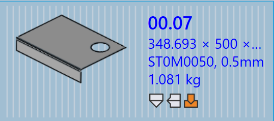

Pannello componente
Questa sezione illustra le azioni relative al componente come Re-import, Re-tool, Rename, Export outputs, ecc., utilizzate per gestire le istanze del componente.

|
|
Re-import
-
Fare clic con il pulsante destro del mouse su un componente qualsiasi e fare clic su Re-import….
-
Tutte le istanze di attrezzaggio del componente selezionato su tutte le macchine vengono cancellate, incluse le istanze attrezzate automaticamente e quelle attrezzate manualmente.
-
I file di output esistenti (CAD, Bend e Cut) vengono rimossi.
-
I componenti vengono importati nuovamente e viene applicata una nuova validazione CAD e attrezzaggio per tutte le macchine.
-
Nuovi file di output vengono creati in base al risultato dell’attrezzaggio aggiornato.
Re-tool
-
Fare clic con il pulsante destro del mouse su un componente qualsiasi e fare clic su Re-tool….
-
Tutte le macchine sono selezionate per impostazione predefinita e raggruppate come Laser, Punch, Panel e Press brake.
-
Fare clic su OK per procedere. Questa operazione rimuove sia le istanze attrezzate automaticamente sia quelle attrezzate manualmente per le macchine selezionate ed elimina i file di output correlati.
-
Quando la casella di controllo Retain existing outputs è selezionata, solo i componenti i cui output sono stati rimossi in precedenza verranno riattrezzati, gli altri output rimangono intatti. Se deselezionata, tutti i file di output per le macchine selezionate vengono rimossi e rigenerati durante il riattrezzaggio.
|
Rename
Questa sezione spiega come rinominare uno o più componenti in TruSmartCAM.
-
Fare clic con il pulsante destro del mouse sul componente e fare clic su Rename….
-
Viene visualizzata una finestra di dialogo di conferma della ridenominazione che mostra il nome corrente del componente.
-
Immettere il nuovo nome e fare clic sull’icona di spunta ✓ per confermare, oppure fare clic sull’icona della croce ✗ per annullare l’operazione di ridenominazione.
-
Per rinominare più componenti, selezionare tutti i componenti richiesti, quindi fare clic con il pulsante destro del mouse su uno qualsiasi di essi e fare clic su Rename….
-
Viene visualizzata una finestra di dialogo di conferma con il numero totale di componenti selezionati.
-
Per ogni componente, immettere il nuovo nome e fare clic sull’icona di spunta ✓ per confermare uno alla volta.
-
Se un componente è stato selezionato per errore, fare clic sull’icona della croce ✗ per annullare. In alternativa, è possibile fare clic con il pulsante destro del mouse sul componente e fare clic su Cancel Rename per saltare la ridenominazione.
Export outputs
Questa opzione esporta l’output del componente nella destinazione configurata in Factory Settings. (Vedere Bend Settings e Cut Settings)
La posizione di output è definita separatamente per Bend, Fold e Cut nelle rispettive impostazioni di output. Tutti gli attrezzaggi associati alle operazioni di piegatura, pannellatura e taglio vengono esportati per l’intero componente.
| I file esportati dipendono dal tipo di operazione. Per le operazioni di Bend e Fold, vengono generati file NC e report. Per le operazioni di Cut e Punch, vengono esportati solo i file del componente. |
Assegnazione del materiale al componente
I componenti con lo stato Material not assigned devono essere aggiornati prima di un’ulteriore elaborazione. I passaggi seguenti spiegano come assegnare il materiale.
-
Fare clic con il pulsante destro del mouse sul componente che visualizza lo stato Material not assigned e selezionare Assign Material….
-
Si apre la finestra Assign Material.
-
La finestra di dialogo presenta quattro sezioni:
-
Suggestions - Suggerisce automaticamente le materie prime in base allo spessore del componente importato.
-
All Materials - Elenca tutti i tipi di materiale definiti in TruSmartCAM.
-
All Raw-Materials - Visualizza tutte le materie prime disponibili nel sistema.
-
Used Raw-Materials - Visualizza le materie prime utilizzate più di recente per un accesso rapido.
-
-
È possibile utilizzare il campo Search in alto per trovare rapidamente i materiali. Ad esempio, digitare "steel" per visualizzare tutti i materiali corrispondenti nelle tre sezioni.
-
Dall’elenco filtrato, selezionare il materiale richiesto (ad esempio, Steel-25) dall’elenco delle Materie prime.
-
Il materiale selezionato verrà assegnato al componente.
Rolling direction
Rolling direction si riferisce all’orientamento della venatura in un componente, che può influire sul modo in cui il componente viene tagliato ed elaborato. Questa opzione consente di specificare la Rolling direction per un componente nella Libreria componenti. In base alla direzione selezionata, il componente verrà posizionato nell’orientamento corretto per il taglio sulle macchine disponibili.
-
Fare clic con il pulsante destro del mouse su un riquadro di componente qualsiasi nella Libreria componenti o nella finestra del lavoro.
-
Selezionare la direzione di laminazione preferita:
-
None
-
Horizontal
-
Vertical
-
-
Il componente viene riattrezzato automaticamente per tutte le macchine di taglio disponibili in base alla direzione di laminazione selezionata.
-
Il riquadro del componente visualizzerà la direzione di laminazione selezionata come mostrato di seguito:


